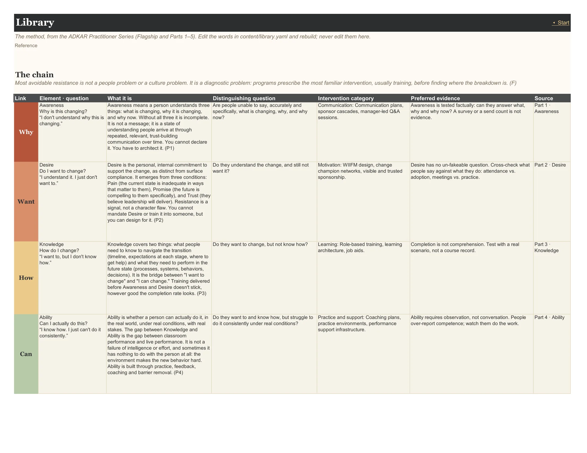
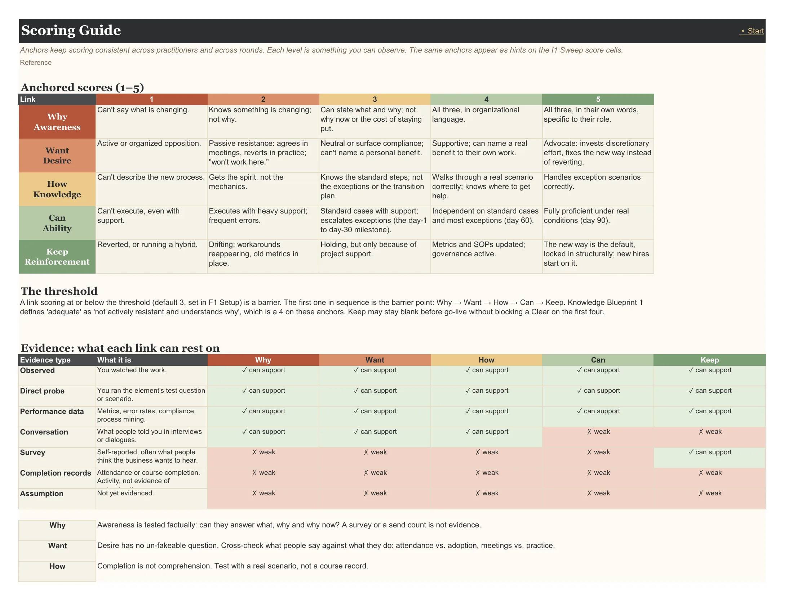

The method itself, in the articles' words, the anchored scoring rubrics, the start page, and the two hidden helper tabs the formulas rely on.
Context (opens in a new tab): The Prescription Trap · Awareness: Build a Change Campaign · Desire: Resistance Is a Design Problem · Knowledge: Why Most Training Programs Are Delivered in the Wrong Order · Ability: Where Change Programs Actually Stall · Reinforcement: The Phase That Determines Whether Change Sticks
On this page: Start · Library · Scoring Guide · Lists · Calc
Start
A practitioner workbook for finding where adoption breaks, population by population, before prescribing anything.
The front door. The chain drawn as five linked blocks, the five FIRST steps with a link to every tab, and a progress tracker computed from the workbook (populations named, scored this round, confirmed, conditions located, trap flags open, pre-flight items at risk, regressions).

Reads from: F1 Setup F2 Populations F3 Impact I1 Sweep R1 Root S1 Plan S2 Pre-Flight Journey
Library
The method, from the ADKAR Practitioner Series (Flagship and Parts 1–5). Edit the words in content/library.yaml and rebuild; never edit them here.
The method as data, in the articles' words: the five elements, gap signals, direct probes, conditions with their Reach-for lists, the 40 blueprints, the Operator's Lens practices, the mistakes and the mismatch patterns. Every row cites its article.

Scoring Guide
Anchors keep scoring consistent across practitioners and across rounds. Each level is something you can observe. The same anchors appear as hints on the I1 Sweep score cells.
The anchored 1–5 rubric for each link, which evidence each link can rest on, and how the threshold works. The anchors are what keep scoring consistent across practitioners and rounds.

Lists
Why
Hidden tab.
Hidden. The dropdown sources and lookup tables the formulas read (links, stances, evidence types, the practice catalogue, the condition table). Generated from the method content; don't edit it.
Reads from: F1 Setup F2 Populations
Calc
pid
Hidden tab.
Hidden. The helper tables every view and chart reads: one row per population for the current round, the barrier distribution, the journey grids, plan-health counts and the tiles. Generated; don't edit it.
Reads from: F1 Setup F2 Populations F3 Impact I1 Sweep R1 Root S1 Plan S2 Pre-Flight Journey
What the Library holds
5 links · 28 gap signals · 5 direct probes · 39 conditions · 40 blueprints · 15 Operator's Lens practices · 20 mistakes · 3 mismatch patterns · 39 timed practices. All of it is generated from content/library.yaml, the method in the articles' words. The full tables are on the Isolate, Root, Select and Track pages.